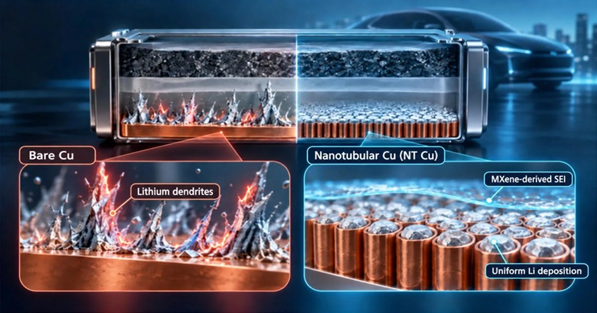

Меньшие батареи для электромобилей, большая дальность? Ученые, возможно, нашли способ
Ученые разработали новую технологию, которая может сделать батареи электромобилей меньше, легче и долговечнее, потенциально позволяя автомобилям путешествовать дальше на одном заряде.
Заимствуя точные технологии производства из производства компьютерных чипов, они нашли способ предотвратить повреждение накопления лития, которое сдерживало батареи следующего поколения.